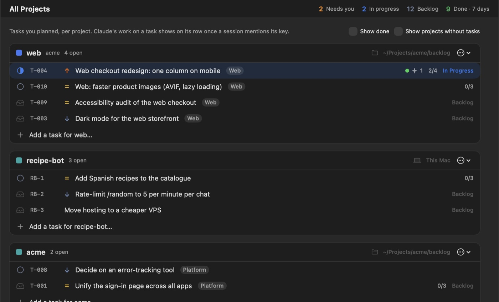

Know when Claude is waiting on you
Needs You gathers every session that ended on a question, with the question itself, the outcome so far and a Resume button.

A Mac app that turns your Claude Code sessions into tickets, next to the tasks you plan per project.

Needs You gathers every session that ended on a question, with the question itself, the outcome so far and a Resume button.
Your own backlog per app. Mention a key like T-004 in a prompt and the session links to it.

Plain markdown your team and Claude both read. Backlog.md compatible.
--- id: T-004 title: Checkout redesign priority: P1 status: in-progress ---
What you asked and what got done, day by day, with Claude's active time.

Requests per day and project, status at a glance, and when in the week you work with Claude.

Unzip, drag to Applications, then right-click and Open the first time.
Point it at where your code lives, like ~/Developer. Every git repo becomes a project.
Use Claude Code as usual. The board fills in by itself every 20 seconds.
No. It reads ~/.claude and the desktop app's session list, read-only. It writes only to its own folder and, when you edit a task, to that task's markdown file.
No. There is no account, no server and no analytics. The app makes no network requests.
macOS 15 or later on Apple Silicon, and Claude Code: the CLI or the desktop app's Code tab. Intel Macs can build it from source.
The app isn't notarized yet. Right-click ClaudeBoard and choose Open the first time, or run xattr -dr com.apple.quarantine ClaudeBoard.app.
Yes. Keep tasks in a backlog/ folder in the repo. Everyone sees the same markdown files through git, and so does Claude.
Yes. Open Help, then Try the Demo Board. It runs on a made-up company and never touches your files.
Free, open source, and it stays on your Mac. Ideas and pull requests are welcome.